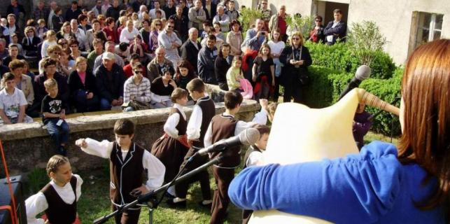

Kulturni proračun za 2014. godinu u stavci Nematerijalna kulturna baština "težak" je 300 tisuća kuna, isto kao i prošle godine. Najviše sredstava ide Radničkom kulturno-umjetničkom društvu Rudar Raša za 49. središnju smotru narodne glazbe i plesa Istre, kojoj će pripasti 50 tisuća kuna. Za tradicionalan 42. po redu susret pjevačkih zborova Naš kanat je lip Pučko otvoreno učilište Poreč dobit će 35 tisuća kuna.

Udruga Tragovi iz Rijeke posvetit će se pak očuvanju vlaškog i žejanskog jezika, koji imaju sve manje govornika. Za taj projekt pripast će im 30 tisuća kuna. Uvijek aktivan KUD Istarski željezničar iz Roča dobit će za program "Za armonikom v Roč" i za 19. svjetsko prvenstvo svirača dijatonskih harmonika 25 tisuća kuna. KUD "Ivan Fonović Zlatela" iz Kršana za zaštitu nematerijalne kulturne baštine u svojoj općini ove će godine moći raspolagati s 20 tisuća kuna.
Čitav niz programa, od kojih su neki već ustaljeni, dobit će po deset tisuća kuna. To su pazinsko Folklorno društvo za program "Nedilja u 5 popolne", RKUD Rudar iz Raše za "Meh na srcu" i "Labinske konti", Udruga mladih Pagubice za "Supci pod mavricun", pazinska Udruga Tradeinetno za istoimeni festival, kao i pazinsko Pučko otvoreno učilište za 14. Mali kanat. Isti će iznos dobiti i dva ročka hvalevrijedna, već tradicionalna programa, "Bajsi u Draguću" i "Z vijulini sopu muškardini", kao i Općina Lanišće za "Zarozgajmo na Ćićariji".
Projekt Sveučilišne knjižnice u Puli "Istarske novine online" i također će dobiti deset tisuća kuna, kao i LAE XXI Labin za virtualni muzej rudarstva i industrije Istre. Zajednica Talijana Vodnjan za 14. međunarodni festival folklora Leron dobit će deset tisuća kuna, a takav će iznos ići i projektu Istarskog povijesnog društva Pula "Istarske sudbine: Istrani u sabirnim i zarobljeničkim logorima za vrijeme Drugog svjetskog rata i poraća".
Najmanje, po pet tisuća kuna, dobivaju Udruga Babin pas iz Rovinja za Dane kažuna Rovinjskog Sela i Fenoliga, Udruga u kulturi Medulin, koji nastavljaju održavati seriju zimskih predavanja u Premanturi. Ostalim programima u kulturi ide deset tisuća kuna.
V. Begić
February 3, 2014
© 2014 Glas Istre